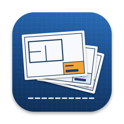

SheetbreakSupport
Answers to common questions are below. If yours isn’t, email k.fitzgerald310@gmail.com with your Mac model and macOS version.
Using Sheetbreak
Which plan sets work?
PDFs from any CAD program or platform, with the sheet number and title in a title block: a box in the lower right, a strip along the right side or a strip along the bottom. Scanned sets work too: pages without text are read with text recognition on your Mac.
The box is in the wrong place.
Drag a new box on the sample page, or pick Lower Right, Right Strip or Bottom Strip, then read the sheets again. Check a few pages first: the same box is used on all of them. Sheetbreak remembers the box for that set.
What do the flags mean?
A sheet is flagged when its number or title is missing, its number is the same as another sheet’s, its number doesn’t follow the set’s usual pattern, or the reading is uncertain. Fix the field, leave the sheet out, or choose Mark as Checked.
How are the files named?
Pick a preset (number and title, number only, a folder or one PDF per discipline…) or write your own pattern from {number}, {title}, {discipline}, {page} and more. Characters that break file names or upload forms are taken out, and two sheets never get the same name.
Does it check my plans?
No. Sheetbreak copies what the title blocks say. It doesn’t check plans against any code or submission rule, so check the names against what you’re submitting to.
Sheetbreak Pro and Shop
What’s free, and what do Pro and Shop add?
Everything works without a key, and you can export the first 25 sheets of a set; reading and reviewing have no limit. Pro exports sets of any size on up to 3 Macs; Shop is the same on up to 5 Macs. Both are one-time purchases on Gumroad, with no subscription.
Where do I enter my license key?
Choose Sheetbreak › Settings…, open the License tab, paste the key from your Gumroad receipt and click Activate.
How do I get updates?
Sheetbreak checks for updates on its own; you can also choose Check for Updates… from the Sheetbreak menu. Updates are free.
Purchases
How do I get a refund?
Gumroad handles payment. Reply to your Gumroad receipt or email k.fitzgerald310@gmail.com.
Do I have to pay again on another Mac?
No. One license key works on up to 3 of your Macs. Download the app again from your Gumroad receipt or library and enter the same key.